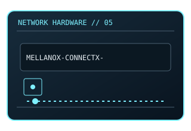

[ MODEL-SPECIFIC NETWORK HARDWARE ]
Mellanox ConnectX-5 EN MCX516A-CDAT
Dual-port 100GbE QSFP28 adapter variant for high-speed server fabrics. This entry uses the labeled manufacturer model identifier and cites primary product/support documentation.

MODEL IDENTIFICATION: Match the complete model/part number and hardware revision on the item label to manufacturer documentation. Do not apply this entry to near-name variants.
Exact specifications and compatibility
| Cataloged model | Mellanox ConnectX-5 EN MCX516A-CDAT |
|---|---|
| Dedicated subcategory | 10 Gigabit and server adapters |
| Bus / host interface | PCIe 3.0 x16 host connection. |
| Ports / physical interfaces | 2 × QSFP28; supports Ethernet, with transceivers/DACs selected separately. |
| PHY, radio or protocol | ConnectX-5 EN adapter; Ethernet/RoCE capabilities depend on firmware and configuration. |
| PoE | No PoE input or PoE output is documented for this product. |
| Link-rate vs throughput | Up to 100 Gb/s per port nominal; not a guaranteed end-to-end payload rate. Link rates are nominal negotiated/PHY specifications, not measured application throughput; no measured specimen result is claimed. |
| Firmware / driver support | NVIDIA/Mellanox OFED or inbox drivers and card firmware; verify exact OS and firmware support. |
| Compatibility checks | Verify card label suffix: MCX516A-CDAT is a different assembly than cataloged MCX516A-CCAT. |
Model-specific notes
Use supported QSFP28 media and adequate chassis cooling.
Primary manufacturer sources
- NVIDIA ConnectX-5 Ethernet Adapter product briefManufacturer product specification or documentation for the exact model/family.
- Manufacturer support and compatibility resourcesFirmware, driver, compatibility, revision or support details; applicability may depend on the exact hardware revision and region.
Vendor maximum rates are not test results. Confirm regional variants, hardware revision and current support status with the manufacturer.